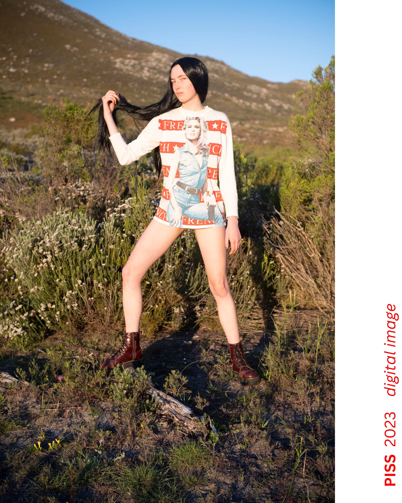
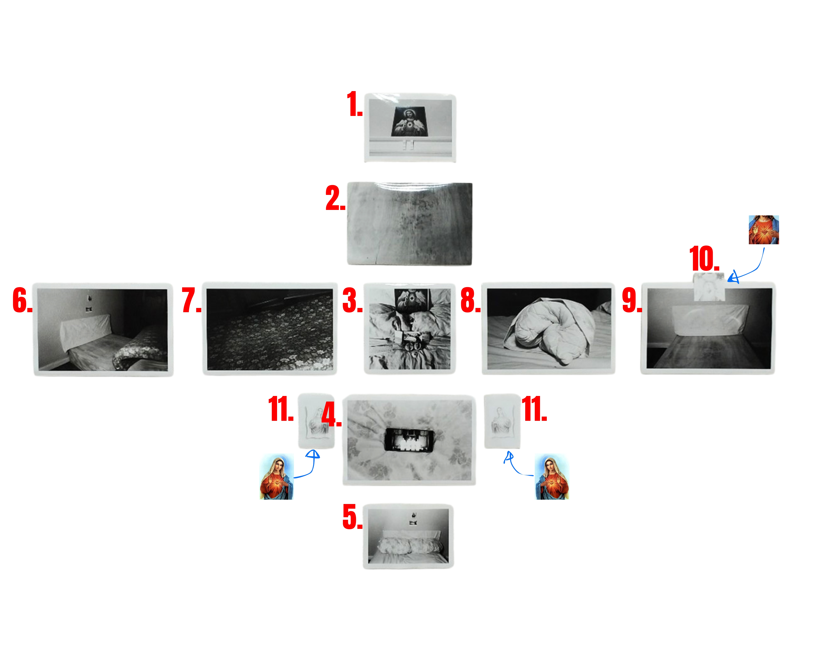

2024, group show showcasing a selection of photographs, 21st March – 4 April 2024, held at Demo Projects, 79 Roeland Street, Cape Town.
Queerness is given form by practice, rather than by design. It does not possess a blueprint or design in the same sense that architectural space does. Architectural structures tend to impose themselves upon (sexed) bodies, while queerness – as a technology, event or undertaking – offers the possibility of rebellion, repudiation, and subversion. This collation of works invites the viewer to consider the relationship between architecture and queerness. What happens when the two encounter one another? That is, when queerness happens to a concretised, unyielding environment. Can architectural space be appropriated and utilized to imagine some sense of a personal identity and belonging into tangible reality? If and where not, how does queerness – in its all its ambivalence, devotionality and innovativeness – work to undermine the imperiousness of the built world?
Participants: Bjorn Thomas, Matthew Michael, Unathi Mkonto.

